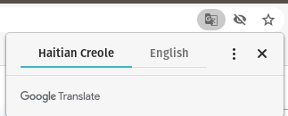
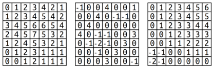
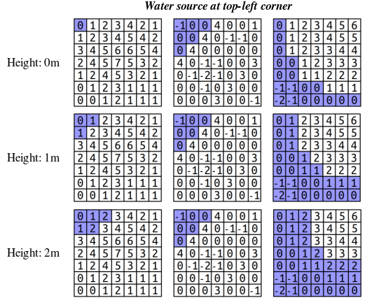
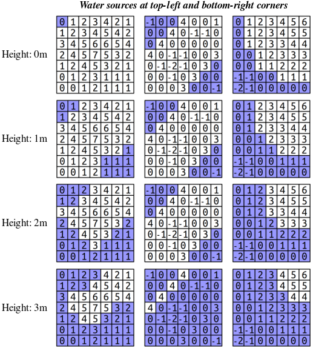

Assignment 2. Fun with Collections¶
This assignment is all about the amazing things you can do with collections. It’s a two-parter. The first is a program that can guess the language a piece of text is written in. The second models rising sea levels on a sampler of realistic terrains. By the time you’ve completed this assignment, you’ll have a much better handle on the container classes and how to use different types like queues, maps, vectors, and sets to model and solve problems. Plus, you’ll have some things we think you’d love to share with your friends and family.
This assignment has two parts. It will be quite a lot to do if you start this assignment the night before it’s due, but if you make slow and steady progress on this assignment each day you should be in great shape. Here’s our recommended timetable:
Aim to complete Rosetta Stone within four days of the assignment going out.
Aim to complete Rising Tides within seven days of this assignment going out.
Starter Files¶
We provide a ZIP of the starter project. Download the zip, extract the files, and open the project in VS Code.
Part One: Rosetta Stone¶
Rosetta Stone is a joint project with Katie Creel, Diana Navas, and Wanheng Hu, Embedded Ethics Extraordinaires. Thanks to Richard Lin, Patricia Wei, Jin-Hee Lee, Neha Chetry, Nuhu Osman Attah, and Rose Novick for providing sample texts.
Have you ever navigated your web browser to a site not written in your native language? If so, you might have seen something like this in the corner:

A message from Google Chrome that indicates the page being visited is written in Haitian Creole and offering to translate it to English.¶
The browser has automatically detected that the website I visited is written in Haitian Creole, while the browser itself is set to English.
How does the browser know what language a webpage is written in? This is the language identification problem, which has been studied extensively for at least the last thirty years. In this part of the assignment, you’ll implement a simple but effective language identification algorithm, gaining experience working with the Map container type in the process.
Background: Trigrams¶
The approach we’ll be using for language identification is based on trigram profiles. To understand what a trigram profile is, let’s do an example. Suppose we have this (admittedly silly) piece of text:
A BANANA BANDANA
The trigram profile for this string is a collection of all its length-three subtrings, along with the number of times that length-three substring appears. Specifically, it’s this group:
"ANA": 3" BA": 2"A B": 2"BAN": 2"AND": 1"DAN": 1"NA ": 1"NAN": 1"NDA": 1
That is, the pattern ANA appears three times, the pattern BAN appears twice, and the pattern NDA appears exactly once. These substrings are called trigrams. (More generally, the k-grams of a text are all of the substrings of that text that have length exactly k.)
Trigram profiles are useful for language identification because the patterns of trigrams that appear in a long piece of text often heavily reflects the language that text was written in. For example, here’s the top trigrams from a profile of an English text (specifically, the Wikipedia article “Human”):
" th": 667"the": 616"he ": 533" an": 497"nd ": 492"and": 470"ion": 423" of": 376" in": 375"of ": 363"tio": 333"ed ": 320"ing": 318"man": 289"ng ": 288…
That top entry, " th", indicates that the text has a lot of words that start with th. You can see that the word "the" is extremely common, as are the suffixes "ing" and "ion".
Contrast this with a set of trigrams taken from a piece written in Malay:
"an ": 184"ang": 82" da": 73" me": 71"ng ": 71"dan": 52"kan": 52"sia": 52"ia ": 47"men": 42" be": 40" pe": 39" ya": 39"yan": 39" ma": 38…
Or this set of trigrams from a piece written in Spanish:
" de": 531"os ": 396"de ": 374"ent": 298" la": 293"es ": 277"la ": 239"el ": 232" co": 217" es": 208"en ": 198"ien": 198"nte": 196"as ": 193" en": 185…
Or this piece written in Slovene:
"je ": 82" po": 65" pr": 45"ih ": 45"anj": 43"nos": 43" na": 39"ost": 39"ove": 37"lov": 36" je": 34" ra": 33"raz": 33"in ": 32"sti": 32…
Or this one in Hausa:
"ar ": 93"an ": 85" da": 72"in ": 69"da ": 58"iya": 42" a ": 39" ka": 38" ta": 38"ara": 38" sh": 35" wa": 35"a s": 35"ana": 33"na ": 33…
As you can see, the relative frequencies of the trigrams in the text are markedly different from one another. This makes it possible to guess a text’s language by computing its trigram profile and then finding which language that profile most resembles.
Background: UTF-8¶
Before we dive into the actual coding part, we have to address an issue you’ll encounter almost immediately when working on this assignment.
Here’s what happens if we gram trigrams from a piece of text written in Vietnamese:
"ng ": 591"h\341\273": 442" \304\221": 371"\260\341\273": 311"\306\260\341": 311" th": 307" nh": 276" ng": 251"\303\240 ": 231" tr": 229"\341\273\235": 219"\304\221\341": 211"nh ": 205"i\341\273": 200…
And here’s some trigrams from Bulgarian text:
"\320\275\320": 835"\321\202\320": 701"\320\276\320": 607"\320\260 ": 551"\321\200\320": 517"\320\265\320": 491"\320\260\320": 450"\320\270\320": 438"\320\262\320": 433"\320\270\321": 395"\260 \320": 356"\320\270 ": 349"\320\276\321": 348"\320\260\321": 321…
And here’s some from Farsi:
"\330\247\331": 562"\330\247\330": 529"\247\331\206": 391"\331\206\330": 361"\330\263\330": 320" \330\247": 306"\333\214 ": 287"\331\210\330": 281"\333\214\330": 256" \330\250": 241"\331\207 ": 240"\331\206 ": 235"\330\257\330": 231"\330\261\330": 230…
What’s going on here? Why are we seeing lots of numbers and slashes rather than actual characters?
The reason has to do with two historical artifacts of C++ colliding with contemporary realities. C++ is an older language (it dates back to the 1980s), at a time where computer networks were small and memory was scarce. To save space, most C++ implementations only allowed for 256 different values for the char type. And that was fine, since computers were often used in contexts where the English alphabet (plus a few added characters for other languages) was all that was needed. You could easily get away with having only 256 possible different characters, and the space savings were key at a time where even a 1GB hard drive would be considered a luxury.
But now that memory is much cheaper and people all over the world are connecting and sharing text in their native languages, this restriction on the char type is more of a liability than an asset. Restricting the char type to only have 256 possible values means that there are more Chinese characters than there are possible char values – not to mention more emojis than chars.
To address this, a compromise was reached – while (for backwards compatibility) English letters would take up just one char value, glyphs from other languages would be encoded as a sequence of multiple consecutive chars representing a single glyph. And, as a strange side-effect, the individual chars making up those glyphs can’t easily be displayed in isolation. They are often displayed as \NNN. For example, the sequence \331\206 corresponds to the Arabic character ن, while \320\270 corresponds to the Cyrillic letter и. This system is called UTF-8.
In the context of this assignment, this means that a “trigram” formed from a piece of text might actually consist of a fractional character. For example, the ancient Phoenician character 𐤄 is encoded as a sequence of four char values, so trigrams from Phoenician text would often contain quarters or halves of individual Phoenician letters. While in general it is not okay to subdivide characters this way (many systems will display error characters if you try printing out a partial glyph), for the purposes of this assignment you should always form trigrams from a group of three char values, regardless of what fraction of a glyph those three chars represent.
To summarize:
Don’t be surprised if you see sequences like
\302or\225appearing in your trigrams. That’s a consequence of using characters that 1980s Americans wouldn’t have expected to see on their computers. It’s a complete historical artifact, but one we have to live with today.For the purposes of this assignment, it is perfectly okay – and in fact, expected – that when forming trigrams, you should always form groups of three
charvalues, rather than trying to segment text at the actual boundaries between glyphs. Surprisingly, this still works well in practice.Outside of the context of CS101B, be aware that
chardoes not mean “a character in any language.” Some glyphs require multiple characters to encode. The “correct” way to handle these sorts of strings is to use a library that properly breaks text apart into its individual units.
Milestone One: Form k-Grams¶
Your first task in this problem is to implement a function
Map<string, double> kGramsIn(const string& text, int kGramLength);
that takes as input a string, then returns a Map<string, double> containing the frequencies of all the k-grams of length kGramLength. Each key should be a k-gram (a substring of length kGramLength), and each value should be the number of times that this k-gram appears in the string. For convenience, any k-gram that doesn’t appear in the text should not be present in the map, not even with value zero.
You can assume that the kGramLength parameter is positive (for example, it shouldn’t be 0 or -137). If the kGramLength parameter is not positive (that is, it’s zero or negative), you should call the special function error, defined in "error.h", to report an error. You can call this function as follows:
error("Some error message");
The error function acts like an emergency abort and will immediately exit the function with an error.
The input string might be shorter than kGramLength. If that happens, there are no k-grams, and you should return an empty Map.
Milestone One Requirements
Implement the
kGramsInfunction inRosettaStone.cpp.Use the provided tests to confirm that your code works correctly.
Optionally, but not required: use
STUDENT_TESTto add a test case or two of your own!
You might be wondering why we’re having you return a Map<string, double> here rather than a Map<string, int>. After all, the frequencies here are all integers, and int seems like a more appropriate type. There are two reasons why we’re having you do this:
In a later step, you will be dividing all the entries of this map to make them between 0 and 1, inclusive. Working with a
Map<string, double>here makes that step a bit easier.Later on, you’ll be doing a calculation involving multiplying each of the terms in the map by themselves. The
inttype is (usually) limited to a range from roughly negative two billion to roughly positive two billion, and some of the entries in the map, when squared, exceed that range. On the other hand,doubles can comfortably handle values outside this range.
Some notes on this problem:
There’s an Endearing C++ Quirk you may encounter in this part of the assignment. The
.length()and.size()functions on a string return what’s called an unsigned integer. These are integer values that are not permitted to be negative, which means that they can have unusual interactions with subtraction. For example, if you have a string of length 2 and computestr.length() - 3, instead of getting -1, you’ll get a gigantic positive number (this is called integer overflow - take CS102 for details!). As a result, avoid subtraction when working with.length()and.size(). If you’re tempted to subtract something from the length of a string, instead see if you can add something to another quantity.Just to make sure the notion of a k-gram is clear, the 3-grams of the string
"ABCDEF"are"ABC","BCD","CDE", and"DEF"; the 4-grams of the string"ABCDEF"are"ABCD","BCDE", and"CDEF"; the only 6-gram of"ABCDEF"is"ABCDEF"; the six 1-grams of"ABCDEF"are"A","B","C","D","E", and"F"; and there are no 137-grams of the string"ABCDEF".To make sense of the syntax here, the name of the function you’re writing is
kGramsIn, and the function return type isMap<string, double>. This does not mean that there is an actualMap<string, double>namedkGramsIn. If you want to create aMap<string, double>as a local variable, feel free to do so, but pick a more descriptive name for it.You should call the
errorfunction if the k-gram length is zero or negative, because there’s no meaningful way to define a 0-gram or a -137-gram. However, if the k-gram length is greater than the length of the input string, you should return an emptyMap, since in general large k-grams are a meaningful thing to talk about and there just don’t happen to be any for a shorter string.If you’re looking for information about the syntax of different operations on our container types, check out the Stanford C++ Library Documentation page.
Milestone Two: Normalize Frequencies¶
We now have a Map<string, double> representing the trigrams in the original text. Once we have these frequencies, we can guess the text’s language by seeing which language’s trigram distribution it’s most similar to. There are many ways to define what “most similar to” means, but one of the most common ways to do this uses something called the cosine similarity, which is described below.
First, an observation. Here are the trigram distributions for three pieces of text, each of which are written in English:
Distribution 1
" th": 219"the": 171"he ": 113"ing": 79" of": 76"ng ": 76"of ": 69" to": 62"at ": 60"nd ": 60"acc": 58"cin": 58"cci": 57"to ": 57"and": 54"re ": 54" be": 53" in": 53"e t": 53…
Distribution 2
" th": 495"the": 388"he ": 351"ing": 231"nd ": 194"ng ": 193" a ": 159"ed ": 158" to": 157" I ": 154" an": 153"and": 152"to ": 146"her": 134"er ": 128"e t": 126"re ": 124"is ": 121" of": 117…
Distribution 3
" th": 510"he ": 371"the": 339"ed ": 269" to": 257" an": 222"to ": 217"ing": 208"nd ": 205"ng ": 196"and": 195" in": 187"at ": 175"hat": 174" a ": 171" of": 159"is ": 158"as ": 154"tha": 154…
In each case, we can see that the very most common trigrams are pretty much the same across the three texts (though the ordering is a bit different). However, notice that the numbers are generally increasing as we move from the first document to the third. The reason for that is simple – these were computed from progressively longer texts.
To make the trigram frequencies more consistent across texts of different lengths, you will need to normalize the scores. Borrowing a technique from linear algebra, we’ll normalize scores as follows:
Add up the squares of all the frequencies in the map.
Divide each frequency by the square root of this number.
As a very simplified example, suppose we have these trigrams:
"aaa": 3"baa": 1"aab": 1
We’d compute the number \(3^2 + 1^2 + 1^2 = 11\), then divide each number by the square root of eleven to get these new frequencies:
"aaa": 0.904534"baa": 0.301511"aab": 0.301511
Applying this same approach to the three distributions from above (including the frequencies of the less frequent k-grams that we didn’t show) gives the following:
Distribution 1
" th": 0.40398"the": 0.31503"he ": 0.20755"ing": 0.14639" of": 0.14083"ng ": 0.14083"of ": 0.12786" to": 0.11489"at ": 0.11118"nd ": 0.11118"acc": 0.10562"cin": 0.10562"to ": 0.10562"cci": 0.10377"and": 0.10007"re ": 0.10007" be": 0.09821"e t": 0.09821"ed ": 0.09821…
Distribution 2
" th": 0.37585"the": 0.29460"he ": 0.26651"ing": 0.17539"nd ": 0.14730"ng ": 0.14654" a ": 0.12072"ed ": 0.11997" to": 0.11921" I ": 0.11693" an": 0.11617"and": 0.11541"to ": 0.11085"her": 0.10174"er ": 0.09719"e t": 0.09567"re ": 0.09415"is ": 0.09187" of": 0.08883…
Distribution 3
" th": 0.33214"he ": 0.24161"the": 0.22077"ed ": 0.17518" to": 0.16737" an": 0.14458"to ": 0.14132"ing": 0.13546"nd ": 0.13350"ng ": 0.12764"and": 0.12699" in": 0.12178"at ": 0.11397"hat": 0.11331" a ": 0.11136" of": 0.10355"is ": 0.10289"as ": 0.10029"tha": 0.10029…
With the scores normalized, these numbers are much closer to one another, indicating that they’re using fairly similar distributions of trigrams.
Your next task is to implement a function
Map<string, double> normalize(const Map<string, double>& profile);
that takes as input a trigram profile, then returns an normalized version of the profile.
There is an important edge case you need to handle. If the input Map is empty or does not contain any nonzero values, then the calculation we’ve instructed you to do above would divide by zero. (Do you see why?) To address this, if the map doesn’t contain at least one nonzero value, you should use the error() function to report an error.
Milestone Two Requirеments
Implement the
normalizefunction inRosettaStone.cpp.Use the provided tests to confirm that your code works correctly.
Optionally, but not required: use
STUDENT_TESTto add a test case or two of your own!
Some notes on this problem:
There are no restrictions on what the keys in the map can be. Although you’ll ultimately be using this function in the context of trigrams, you should not assume that the keys will necessarily be strings of length three, nor that the keys could be a set of trigrams for a piece of text. Similarly, while it’s never possible to have a negative number of copies of a given trigram, your code should be able to handle negative values. In each case, sum up the squares of all the values, then divide each of the values by the square root of that sum.
The keys in the resulting map should be the same as the keys in the input map. In other words, you should not add or remove keys.
For those of you coming from Python: C++ doesn’t have a built-in exponentiation operator like
**. Instead, to compute powers or square roots, include the header<cmath>and use thepowandsqrtfunctions.If you’re looking for information about the syntax of different operations on our container types, check out the Stanford C++ Library Documentation page.
Milestone Three: Filter Out Uncommon Trigrams¶
While all texts written in a particular language will show a strong degree of similarity between their most frequent trigrams, the infrequent trigrams in two pieces of text written in the same language often differ greatly. For example, these infrequent trigrams often reflect uncommon words that appear a few times in a text.
To address this, we’re going to ask you to write a function
Map<string, double> topKGramsIn(const Map<string, double>& profile,
int numToKeep);
that takes as input a k-gram profile and a maximum number of k-grams to keep, then returns a Map containing only the numToKeep most frequent k-grams in the profile. If numToKeep is bigger than the number of k-grams in the profile, you should return all the original k-grams. And if numToKeep is negative, you should report an error(), since that’s not feasible. (If numToKeep is zero, you should just return an empty map.)
To do this, you’ll need some way to work with k-grams sorted by frequency. For that, we’ll introduce a new, useful container type that you’ll see later on in the quarter: a priority queue. If you include the header file "priorityqueue.h", you’ll get access to the PriorityQueue container type.
Like a regular queue, the PriorityQueue supports the enqueue, dequeue, peek, size, and isEmpty operations. The difference between a priority queue and a regular queue is the order in which the elements are dequeued. In a regular Queue, elements are lined up in sequential order, and calling dequeue() or peek() gives back the element added the longest time ago. In the PriortyQueue, each time you enqueue an element, you associate it with a number called its weight. The element that’s returned by dequeue() or peek() is the element that has the lowest weight. For example, let’s imagine we set up a PriorityQueue like this, holding a collection of past CS TAs:
PriorityQueue<string> pq;
pq.enqueue("Amy", 103);
pq.enqueue("Ashley", 101);
pq.enqueue("Anna", 110);
pq.enqueue("Luna", 161);
If we write
string elem = pq.dequeue();
cout << elem << endl;
then the string printed out will be "Ashley", since of the four elements enqueued, the weight associated with Ashley (101) was the lowest. Calling pq.dequeue() again will return "Amy", since her associated weight (103) was the lowest of what remains. Calling pq.dequeue() a third time would return "Anna".
Let’s insert more values. If we call pq.enqueue("Chioma", 103) and then pq.dequeue(), the return value would be the newly-added "Chioma", because her associated weight is lower than all others. And note that Chioma was the most-recently-added TA here; just goes to show you that this is quite different from a regular Queue!
We’re going to leave it to you to determine how to use the PriorityQueue type to find the most frequent k‑grams. There are many strategies you can use to do this. Something to think about: PriorityQueues are great at removing items with low weight, and you want to find items of high weight.
Milestone Three Requirements
Implement the
topKGramsInfunction inRosettaStone.cpp.Use the provided tests to confirm that your code works correctly.
Optionally, but not required: use
STUDENT_TESTto add a test case or two of your own!
Some notes on this problem:
Your solution needs to make use of the
PriorityQueuetype. While there are other ways to sort things in C++, for the purposes of this problem we’d prefer if you avoid them.If multiple k-grams are tied for having the same weight, you can break ties however you’d like.
The input frequencies may or may not be normalized.
Although this wouldn’t be possible in a k-grams setting, this function should work just fine even if some of the values in the map are zero or negative.
Milestone Four: Implement Cosine Similarity¶
At the end of the previous milestone, we saw this trio of trigram profiles for English texts:
Distribution 1
" th": 0.40398"the": 0.31503"he ": 0.20755"ing": 0.14639" of": 0.14083"ng ": 0.14083"of ": 0.12786" to": 0.11489"at ": 0.11118"nd ": 0.11118"acc": 0.10562"cin": 0.10562"to ": 0.10562"cci": 0.10377"and": 0.10007"re ": 0.10007" be": 0.09821"e t": 0.09821"ed ": 0.09821…
Distribution 2
" th": 0.37585"the": 0.29460"he ": 0.26651"ing": 0.17539"nd ": 0.14730"ng ": 0.14654" a ": 0.12072"ed ": 0.11997" to": 0.11921" I ": 0.11693" an": 0.11617"and": 0.11541"to ": 0.11085"her": 0.10174"er ": 0.09719"e t": 0.09567"re ": 0.09415"is ": 0.09187" of": 0.08883…
Distribution 3
" th": 0.33214"he ": 0.24161"the": 0.22077"ed ": 0.17518" to": 0.16737" an": 0.14458"to ": 0.14132"ing": 0.13546"nd ": 0.13350"ng ": 0.12764"and": 0.12699" in": 0.12178"at ": 0.11397"hat": 0.11331" a ": 0.11136" of": 0.10355"is ": 0.10289"as ": 0.10029"tha": 0.10029…
We as humans can look at these numbers and say “yep, they’re pretty close,” but how could a computer do this? Suppose we have two trigram profiles \(P_1\) and \(P_2\) that have already been normalized. One measure we can use to determine how similar they are is to compute their cosine similarity, which can be computed as follows: for each trigram that appears in both \(P_1\) and \(P_2\) multiply the frequency of that trigram in \(P_1\) and \(P_2\) then add up all the numbers you found this way.
As an example, consider these two (highly contrived, not actually real) trigram profiles:
Profile 1
"aaa": 0.333"bbb": 0.667"ccc": 0.667
Profile 2
"bbb": 0.333"ccc": 0.667"ddd": 0.667
These two trigram sets have the trigrams "bbb" and "ccc" in common. We’d therefore find their cosine similarity by computing
The frequencies of "aaa" and "ddd" aren’t relevant here, since those trigrams appear in only one of the two trigram sets.
In the context of trigrams, cosine similarities range from 0 (the two documents have no trigrams in common) to 1 (the two documents have identical relative trigram frequencies).
Your next task is to write a function
double cosineSimilarityOf(const Map<string, double>& lhs,
const Map<string, double>& rhs);
that takes as input two sets of normalized scores, then returns their cosine similarity using the formula given above.
Milestone Four Requirements
Implement the
cosineSimilarityOffunction inRosettaStone.cpp.Use the provided tests to confirm that your code works correctly.
Optionally, but not required: use
STUDENT_TESTto add a test case or two of your own!
Some notes:
Although you’ll ultimately be applying this function to trigram profiles, your function should work in the case where the keys in the two maps are arbitrary strings. In other words, you shouldn’t assume that you’re just working with maps whose keys are all length-three strings.
You can assume that the two sets of input scores are normalized and don’t need to handle the case where this isn’t true.
If you’re looking for information about the syntax of different operations on our container types, check out the Stanford C++ Library Documentation page.
Milestone Five: Guess a Text’s Language¶
At this point, you have the ability to take a text, extract its trigrams, and normalize its profile. You have the ability to take two normalized profiles and compare their scores against one another. All that’s left to do now is put everything together to guess the language of a text.
Here’s how. Before releasing this assignment to you, we went online and got lots and lots of texts written in different languages. Each of the texts associated with a given language is called a corpus (plural corpora) and is designed to be large and diverse enough to give a representative sample of what that language looks like in practice. We then computed trigram profiles for each of those languages, giving a trigram profile for the language as a whole.
To make an educated guess about what language a piece of text is written in, you can simply compute the similarity of that text’s profile against the profiles of all the different languages. Whichever language has the highest similarity to your text then gives the best guess of what language the text was written in.
Your final task is to write a function
string guessLanguageOf(const Map<string, double>& textProfile,
const Set<Corpus>& corpora);
that takes as input a text’s k-gram profile (which has been normalized and then trimmed to store only the most frequent k-grams) and a set of corpora for different languages. This function then returns the name of the language that has the highest cosine similarity to the text. As an edge case, if the set of corpora is empty, you should call error() to report an error, since in that case there aren’t any languages to pick from.
You may have noticed that the last parameter to this function is a Set<Corpus> representing the text corpora. What exactly is a Corpus? In the RosettaStone.h header file, you’ll see that it’s defined like this:
struct Corpus {
string name; // Name of the language
Map<string, double> profile; // Normalized and trimmed
};
This is a structure, a type representing a bunch of different objects all packaged together as one. This structure type groups a string named name (the name of the language) and a Map<string, double> named profile (its normalized trigram profile). The name Corpus refers to a type, just like int or string. You can create variables of type Corpus just as you can variables of any other type. For example, you could declare a variable of type Corpus named english like this:
Corpus english;
One you have a variable of type Corpus, you can access the constituent elements of the struct by using the dot operator. For example, you can write code like this:
Corpus english;
english.name = "American English";
english.profile["the"] = 0.13742;
Milestone Five Requirements
Implement the
guessLanguageOffunction inRosettaStone.cpp.Use the provided tests to confirm that your code works correctly.
Optionally, but not required: use
STUDENT_TESTto add a test case or two of your own!
Some notes on this part of the problem:
You can assume that whoever is calling this function will already have normalized the frequencies of all the k-grams in the profile and each corpus and then filtered them down to just the most common k-grams. You do not need to - and should not - repeat these steps, since doing so will slow down your function.
If there is a tie between two or more languages being the most similar, you can break the tie in whatever way you’d like.
If you’re looking for information about the syntax of different operations on our container types, check out the Stanford C++ Library Documentation page.
Milestone Six: Explore and Evaluate¶
You’ve just implemented a system to guess the languages of various pieces of texts. It’s now time to ask: how well does it work? When does it give good guesses? When does it do poorly? Questions like these are important, especially given the cultural and political significance of languages.
Let’s begin with some cases where your program does a great job identifying languages. The following texts will all have their languages correctly identified.
Run the “Rosetta Stone” demo from the top-level menu and use it to answer each of the following questions. Write your answers in the file LanguageIdentification.txt. As a note, assuming you’ve coded everything up correctly, the answers your program produces should be correct.
What language is this written in?
ᎤᎵᏍᏔᏴᏗ ᎦᎵᏙᏗ ᏭᎷᏤᎢ, ᎤᏗᏔᎮ ᎦᏁᎲ, ᎤᏲᏏᏍᎩ ᎤᏗᏔᎮ ᎤᏅᏗ ᏃᎴ ᎤᎩᏍᏙᎡ ᏑᎾᎴ ᎠᎩᏍᏗ ᎤᏂᏑᎸᏓ. ᎣᏍᏓ ᏄᎵᏍᏔᏁᎮ ᎤᏩᏌ ᎤᏪᏅᏒ ᎡᏙᎲ. ᎦᏅᏆᎶᏍᏗ ᏭᏴᎮ ᏣᏄᏏ ᏃᎴ ᏣᏁᎳ ᎠᏂᏎᏂᏏ ᏴᎩ, ᎣᏍᏓ ᏄᏩᏁᎴ ᎠᏦᏴ.
What language is this written in?
ᐁᐘᑯ ᐅᒪ ᐊᓯᓂᐏ ᒣᓂᑲᐣ ᑭᒥᓇᐘᐠ ᐃᓂᓂᐘᐠ ᒪᓂᑐᐸ ᑳᔭᒋᐠ᙮ ᐁᐘᑿᓂᐠ ᐅᑭ ᑲᓄᒋᐦᑕᒋᐠ ᐊᓯᓂᐏᐊᑐᐢᑮᓂᓂᐤ ᑲᑭᒥᓂᐦᒋᐠ ᐅᒣᓂᐤ᙮ ᐊᑿᓂ ᒥᑕᐦᑐᒥᑕᓇᐤ ᐊᐢᑭᐩ ᐊᓴᐩ ᐁᐊᑐᐢᑫᒋᐠ ᐅᑕ ᒪᓂᑐᐸ᙮
What language is this written in?
Penei ka manao ana o kekahi poe. I ke kaua ana o kekahi aina me kekahi aina, o ka poe i hee, makau lakou o lukuia mai a holo wale lakou ma ka moana, a loaa kahi aina, a noho iho la malaila, a pela hou no, a hiki no na kanaka ma na moku a pau. I ka manao o kekahi poe, ua pupuhi wale ia na waa i holo ma ka moana a pae wale aku i kekahi aina. Ua manao wale ia keia mau mea, aole i maopopo.
What language is this written in?
Tsídiiłtsooí binákʼee halzhinígíí éí tsídii tsídígíí dah yikahjí atah yisdzoh, áádóó éí Náhookǫsjí kéyah dah siʼánígíí bikááʼgóó hólǫ́.
What language is this written in?
Negema wangu binti, mchachefu wa sanati upulike wasiati asa ukanzingatia. Maradhi yamenshika hatta yametimu mwaka sikupata kutamka neno lema kukwambia. Ndoo mbee ujilisi na wino na qaratasi moyoni nina hadithi nimependa kukwambia.
What language is this written in?
Acaam ccaa tiquij, ziic ziix zo quihit áa z imhaa ha. Ziix quih isiihit taa x, hehe quih istj quih cacat quih imiihit. Hehe is quih cacat quih mos imiihit. Háx quih isiisi taa x, hasahcapjö cop iif com cöitnip x, ix cop imiisi.
What language is this written in?
Намрын бороо зөөлөн шиврэхэд аав минь дуртай Насыг нь зөөж буцсаар л байгаа шувуудад хайртай Өөрөө өтлөвч, орчлонд үлдэнэ гэж надад хайртай Өдрөөс өдөрт холдсоор л байгаа аавдаа би хайртай Шар наран улам алслаад л
What language is this written in?
Illoqarfiiit ilaanni illorsuit timersortarfiit, eqaarsaartarfiillu, tamarmik pilersaarusiukkamik nutarterneqarnissaat aallartisarneqassasoq, ullumikkut piumasarisaasunut naapertuuttun-ngorsarlugit.
What language is this written in?
Akyinkyinakyinkyin ama mahu nneɛma, Asante Bonwire Kente nwene deɛ, Manhu bi da o, Kwame nim adeɛ yɔ Ne kente nwono na abɔ me gye Ne nsa; ne nan, n’asadua saa nie.
What language is this written in?
Bo:se: nikya:w do'n sehłdiday xo'ji-nikya:w łiqay. Q'osta:n ye: na'ułch'a:t ch'inehwa:n haya:ł xongkin'-q'it me:ne:q'-ch'in' tse:-q'i-ya:ng'ay ye: dahya:ng'ay -nehwa:n. Haya:ł tin ch'ingkya:w xoke' 'e'n łiwhing-xw 'unt'e.
It would be great if your program always correctly identified the language a text is written in. However, your tool isn’t perfect, and it will sometimes get languages wrong. This can happen for a variety of reasons. Your next task is to explore where this can happen.
Run the “Rosetta Stone” demo from the top-level menu. Answer each of the following questions in the file LanguageIdentification.txt:
This text by Robert Burns is written in Scots. What language does your program say it’s written in? (Sometimes, the trigrams from a text in one language will closely match the trigrams from a related language.)
And there's a hand, my trusty fiere! and gie's a hand o' thine! And we'll tak' a right gude-willie waught, for auld lang syne.
This text is written in English. What language does your program say it’s written in? (Short texts can have trigrams that do not match the general trigram distribution for texts in that language.)
San Jose is in Santa Clara County, California.
This text is written in English. What language does your program say it’s written in? (Trigrams are case-sensitive. We derived the English trigrams from texts that were written in formal English, in which it’s very unusual to see long strings of capitalized letters. As a result, this text will be a low match against English.)
IT WAS THE BEST OF TIMES, IT WAS THE WORST OF TIMES, IT WAS THE AGE OF WISDOM, IT WAS THE AGE OF FOOLISHNESS, IT WAS THE EPOCH OF BELIEF, IT WAS THE EPOCH OF INCREDULITY, IT WAS THE SEASON OF LIGHT, IT WAS THE SEASON OF DARKNESS, IT WAS THE SPRING OF HOPE, IT WAS THE WINTER OF DESPAIR, WE HAD EVERYTHING BEFORE US, WE HAD NOTHING BEFORE US, WE WERE ALL GOING DIRECT TO HEAVEN, WE WERE ALL GOING DIRECT THE OTHER WAY – IN SHORT, THE PERIOD WAS SO FAR LIKE THE PRESENT PERIOD, THAT SOME OF ITS NOISIEST AUTHORITIES INSISTED ON ITS BEING RECEIVED, FOR GOOD OR FOR EVIL, IN THE SUPERLATIVE DEGREE OF COMPARISON ONLY.
This song is written in Nepali. What language does your program say it’s written in? (Nepali is traditionally written with Devanagari script, and we used those texts to get our trigrams. In this example, it’s transliterated using a Latin-derived alphabet. Therefore, this will have a low match with Nepali.)
Rātō ṭikā nidhārmā ṭalakkai ṭalkiyō ḍhākā ṭōpī śiraimā ḍhalakkai ḍhalkiyō rātō ṭikā nidhārmā ṭalakka ṭalkiyō chāti bhitra māyākō āgō salkiyō ē bijulikō tār tār tār tār phursad bha'ē ē hajur bhēṭauṅ śanivār phursad bha'ē ē hajur bhēṭauṅ śanivār ḍhākā ṭōpī śiraimā ḍhalakka ḍhalkiyō māyā khēlnē khēlāḍī jhulukkai jhulkiyō ē bijulikō tār tār tār tār phursad chaina ē hajur ā'uṅdō śanivār phursad chaina ē hajur ā'uṅdō śanivār
Milestone Seven: Ethics: Biased Training Data¶
In this section of the assignment, we’d like you to reflect on the code you’ve just written and dive deeper into some important questions about how it works.
In retrospect, it might seem striking that the code you’ve written is able to determine the language of a piece of text. Nothing in your code looks for particular types of characters, or certain key words, etc. Rather, it works purely by computing some statistics about the text and comparing it against some reference corpora. You can see this most clearly in how the guessLanguageOf function is defined:
string guessLanguageOf(const Map<string, double>& textProfile,
const Set<Corpus>& corpora);
This function has no preconception of what languages are. It relies entirely on corpora for this information. This means that if the trigrams provided for a language were formed from a biased sample of the language - perhaps some texts that are not fully representative of how the language is used - the guessLanguageOf function will reflect those biases in its output.
To illustrate this, let’s look at an example. The trigrams for English were derived from a large, publicly available text in English: a translation of the bible. Because this is the sole source for English trigrams, your guessLanguageOf function, when evaluating whether a text is written in English, is comparing the text’s trigrams against the bible’s trigrams. If you provide your tool a piece of text that is written in English, but not the style of English found in a bible translation, your tool may fail to recognize the language as English.
Answer the following question in the file ShortAnswers.txt
Q1. Give two examples of texts that a native English speaker would readily identify as being written in English, but which use a writing style that is very dissimilar to that of a bible translation. The texts should each be at most 150 words long, and may be excerpted from longer texts. Please include a proper citation of where the text came from. (Here’s a link to information on how to cite sources provided by the ACM, computing’s main professional organization.) Briefly explain why your texts meet those criteria. Your answer should be 3 - 6 sentences in length.
Many software systems that work with languages, whether that’s a translation app or a large language model like ChatGPT, work in a similar way. Like your guessLanguageOf function, those systems often work by building up statistical models of language based on provided data sets. Those data sets are called the training data for those systems, as it’s used to “train” the system what languages look like. Like your guessLanguageOf function, if those systems are not given representative samples of languages, they may produce incorrect answers.
When the training data given to a program are not fully representative of the sorts of inputs those programs will need to handle, we say that the training data are biased. (The term “bias” here does not mean that there will be a particular political viewpoint encoded in the data; it just means that the training data don’t account for the full spectrum of possible inputs.)
Training data sets can be biased for many reasons: logistical constraints (for example, ease and cost of gathering the data), legal restrictions (for example, copyright restrictions or protections for sensitive medical data), faulty assumptions (for example, that all people in a particular group have similar backgrounds or experiences), or even simple ignorance on the part of the developers. But regardless of the reason, biases in training data, when amplified by automated systems, can lead to real harms.
Answer the following question in the file ShortAnswers.txt
Q2. Imagine a hypothetical translation app whose training data consisted of the full contents of Wikipedia. This means the algorithms in the translation system assume the style of writing found on Wikipedia is fully representative of all writing styles. Give an example of a piece of text where, in light of the bias in the training data, you would expect that
the app will do a poor job translating the text, and, simultaneously,
there is a realistic situation in which this translation could lead to a person being harmed.
Explain your reasoning, addressing both of the above points. Your answer should be 3 - 6 sentences in length.
There are roughly 8,000 spoken human languages. Many of these languages are underrepresented online relative to their number of speakers; this can happen either due to differences in internet access, or because there is no standard orthography, or for political reasons, etc.
Consider the following scenario. You are working on a software system that works with language (say, a program like ChatGPT that can converse with users in their own language) and want to expand the number of languages your program can work with. You come across a language that has a large number of speakers, but where it is difficult to find good training data. Specifically, the only available texts online in that language are either
not fully representative of how that language is spoken, or
protected by copyright restrictions.
For example, perhaps your sources consist solely of Twitter/X posts in that language, a bible translation, and blog posts whose copyright status are legally ambiguous.
You now have a choice. If you use those texts as training data, you know that the resulting system could reflect the biases of the small sample of text available, or even potentially expose you to legal liability. On the other hand, if you don’t use those texts as training data, then your program’s performance on that language might be seriously compromised or entirely nonexistent. You need to make a judgment call about how to proceed.
Answer the following question in the file ShortAnswers.txt
Q3: Outline some of the potential benefits of including the limited texts as training data for your program. As you do, think through who specifically would receive those benefits. Your answer should be 4 - 8 sentences in length.
Q4: Outline some of the potential downsides of including the limited texts as training data for your program. As you do, think through who specifically would be impacted by those downsides. Your answer should be 4 - 8 sentences in length.
Q5: Based on your answers to Q3 and Q4, how (if at all) would you use the limited texts as training data? Explain your answer in light of the benefits and harms you outlined in Q3 and Q4. Your answer should be 4 - 8 sentences in length.
The above examples illustrate that the sources of data we use as input to programs that process language can have profound effects on how those systems behave. If you find yourself working on such a system later on, take some time to reflect on what biases may be present in your training data and what steps you could take to mitigate those biases.
Part Two: Rising Tides¶
Background: Our Model¶
Global sea levels have been rising, and the most recent data suggest that the rate at which sea levels are rising is increasing. This means that city planners in coastal areas need to start designing developments so that an extra meter of water doesn’t flood people out of their homes.
Your task in this part of the assignment is to build a tool that models flooding due to sea level rise. To do so, we’re going to model terrains as grids of doubles, where each double represents the altitude of a particular square region on Earth. Higher values indicate higher elevations, while lower values indicate lower elevations. For example, take a look at the three grids to the right. Before moving on, take a minute to think over the following questions, which you don’t need to submit. Which picture represents a small hill? Which one represents a long, sloping incline? Which one represents a lowland area surrounded by levees?

Three sample grids. Each is a 7x7 grid of numbers.¶
We can model the flow of water as follows. We’ll imagine that there’s a water source somewhere in the world and that we have a known height for the water. Water will then flow anywhere it can reach by moving in the four cardinal directions (up/down/left/right) without moving to a location at a higher elevation than the initial water height. For example, suppose that the upper-left corner of each of the three above worlds is the water source. Here’s what would be underwater given several different water heights:

Those three sample grids with different levels of water flooding them, in each case with the water emanating from the top-left corner of the world.¶
A few things to notice here. First, notice that the water height is independent of the height of the terrain at its starting point. For example, in the bottom row, the water height is always two meters, even though the terrain height of the upper-left corner is either 0m or -1m, depending on the world. Second, in the terrain used in the middle column, notice that the water stays above the upper diagonal line of 4’s, since we assume water can only move up, down, left, and right and therefore can’t move diagonally through the gaps. Although there’s a lot of terrain below the water height, it doesn’t end up under water until the height reaches that of the barrier.
It’s possible for a grid to have multiple water sources. This might happen, for example, if we were looking at a zoomed-in region of the San Francisco Peninsula, we might have water to both the east and west of the region of land in the middle, and so we’d need to account for the possibility that the water level is rising on both sides. Here’s another set of images, this time showing where the water would be in the sample worlds above assume that both the top-left and bottom-right corner are water sources. (We’ll assume each water source has the same height.)

Notice that the water overtops the levees in the central world, completely flooding the area, as soon as the water height reaches three meters. The water line never changes, regardless of the current elevation. As such, water will never flood across cells at a higher elevation than the water line, but will flood across cells at the same height or below the water line
Your task is to implement a function
Grid<bool> floodedRegionsIn(const Grid<double>& terrain,
const Vector<GridLocation>& sources,
double height);
that takes as input a terrain (given as a Grid<double>), a list of locations of water sources (represented as a Vector<GridLocation>; more on GridLocation later), and the height of the water level, then returns a Grid<bool> indicating, for each spot in the terrain, whether it’s under water (true) or above the water (false).
You may have noticed that we’re making use of the GridLocation type. This is a type representing a position in a Grid. You can create a GridLocation and access its row and column using this syntax:
GridLocation location;
location.row = 137;
location.col = 42;
GridLocation otherLocation = { 106, 103 }; // Row 106, column 103
otherLocation.row++; // Increment the row.
cout << otherLocation.col << endl; // Prints 103
Background: Breadth-First Search¶
Now that we’ve talked about the types involved here, let’s address how to solve this problem. How, exactly, do you determine what’s going to be underwater? Doing so requires you to determine which grid locations are both (1) below the water level and (2) places water can flow to from one of the sources.
Fortunately, there’s a beautiful algorithm you can use to solve this problem called breadth-first search. The idea is to simulate having the water flow out from each of the sources at greater and greater distances. First, you consider the water sources themselves. Then, you visit each location one step away from the water sources. Then, you visit each location two steps away from the water sources, then three steps, four steps, etc. In that way, the algorithm ends up eventually finding all places the water can flow to, and it does so fairly quickly!
Breadth-first search is typically implemented by using a queue that will process every flooded location. The idea is the following: we begin by enqueuing each water source, or at least the sources that aren’t above the water line. That means that the queue ends up holding all the flooded locations zero steps away from the sources. We’ll then enqueue a next group of elements, corresponding to all the flooded locations one step away from the sources. Then we’ll enqueue all flooded locations two steps away from the sources, then three steps away, etc. Eventually, this process will end up visiting every flooded location in the map.
Let’s make this a bit more concrete. To get the process started, you add to the queue each of the individual water sources that happen to be at least as high as the grid cell they’re located in. From then on, the algorithm operates by dequeuing a location from the front of the queue. Once you have that location, you look at each of the location’s neighbors in the four cardinal directions. For each of those neighbors, if that neighbor is already flooded, you don’t need to do anything because the search has already considered that square. Similarly, if that neighbor is above the water line, there’s nothing to do because that square shouldn’t end up under water. However, if neither of those conditions hold, you then add the neighbor to the queue, meaning “I’m going to process this one later on.” By delaying processing that neighbor, you get to incrementally explore at greater and greater distances from the water sources. The process stops once the queue is empty; when that happens, every location that needs to be considered will have been visited.
At each step in this process, you’re removing the location from the queue that’s been sitting there the longest. Take a minute to convince yourself that this means that you’ll first visit everything zero steps from a water source, then one step from a water source, then two steps, etc.
To spell out the individual steps of the algorithm, here’s some pseudocode for breadth-first search:
create an empty queue;
for (each water source at or below the water level) {
flood that square;
add that square to the queue;
}
while (the queue is not empty) {
dequeue a position from the front of the queue;
for (each square adjacent to the position in a cardinal direction) {
if (that square is at or below the water level and isn't yet flooded) {
flood that square;
add that square to the queue;
}
}
}
As is generally the case with pseudocode, several of the operations that are expressed in English need to be fleshed out a bit. For example, the loop that reads
for (each square adjacent to the position in a cardinal direction)
is a conceptual description of the code that belongs there. It’s up to you to determine how to code this up; this might be a loop, or it might be several loops, or it may be something totally different. The basic idea, however, should still make sense. What you need to do is iterate over all the locations that are one position away from the current position. How you do that is up to you.
It’s important to ensure that the code you write works correctly here, and to help you with that we’ve provided a suite of test cases with the starter files. These test cases look at a few examples, but they aren’t exhaustive. You’ll need to add at least one custom test case – and, preferably, more than one – using the handy STUDENT_TEST macro that you saw in the first programming assignment. We don’t recommend copying one of the test cases from above, since (1) that’s really tedious and time-consuming and (2) it’s better to more directly test particular tricky behaviors with smaller, more focused examples.
To summarize, here’s what you need to do for this assignment:
Rising Tides Requirements
Implement the
floodedRegionsInfunction inRisingTides.cpp. Your code should use the breadth-first search algorithm outlined above in pseudocode to determine which regions are under water. Water flows up, down, left, and right and will submerge any region whose height is less than or equal to the global water level passed in as a parameter. Test as you go.Add in at least one custom test case into
RisingTidesTest.cpp– preferably, not one of the ones we listed above – and if necessary revisit your code to correct any errors you find.
Some notes on this problem:
Need a refresher on
Gridtype? Check the Stanford C++ Library Documentation.The initial height of the water at a source may be below the level of the terrain there. If that happens, that water source doesn’t flood anything, including its initial terrain cell. (This is an edge case where both the “flood it” and “don’t flood it” options end up being weird, and for consistency we decided to tiebreak in the “don’t flood it” direction.)
The heights of adjacent cells in the grid may have no relation to one another. For example, if you have the topography of Preikestolen in Norway, you might have a cell of altitude 0m immediately adjacent to a cell of altitude 604m. If you have a low-resolution scan of Mount Whitney and Death Valley, you might have a cell of altitude 4,421m next to a cell of altitude -85m.
Curious about an edge case? Check the examples above.
Make sure, when passing large objects around, to do so by reference (or
constreference, if appropriate) rather than by value. Copying large grids can take a very long time and make your code slow down appreciably.
Once you’re passing all the tests, click the “Rising Tides” option to see your code in action! This demo uses your code to flood-fill the sample world you’ve chosen. Some of these sample worlds are large, and it might take a while for that flood-fill to finish. However, it should probably take no more than 30 seconds for the program to finish running your code.
The demo app we’ve included will let you simulate changes to the sea levels for several geographical regions of the United States. The data here is mostly taken from the National Oceanographic and Atmospheric Administration (NOAA), which provides detailed topological maps for the US. Play around with the data sets – what do you find?
We also have some maps from Mars, supplied by a Stanford student as an extension to their assignment! The Martian terrain includes many regions way above and way below 0 elevation, so try out some large positive and large negative altitudes to get the full experience here.
Part Three: (Optional) Extensions¶
If you’d like to run wild with these assignments, go for it! Here are some suggestions for additional features to add.
Rosetta Stone: The starter files for this assignment include trigrams for over 200 languages. We made a reasonable effort to make sure those trigram files were reflective of how those languages are actually written, but there may be some trigram files derived from corpora that don’t adequately represent the language. Investigate the quality of the trigrams files for other languages and, if they seem off, find a new corpus and create a better trigrams file. Let us know how you did it so we can update our attributions file.
We know for a fact that our list of languages is incomplete. Do you speak any languages that aren’t represented here? Build a corpus for it and send it our way, along with a description of how you came up with it.
As you saw, the tool sometimes guesses the wrong language. When it does, is that because it’s completely and totally fooled, or because it thought two or more languages were a good match? Try changing the function that guesses languages to return a set of the top n matches for some value of n (say, the top five matches) along with its confidence in each. Tell us if you find anything interesting when you do!
Rising Tides: The sample terrains here have their data taken from the NOAA, which is specific to the United States, but we’d love to see what other data sets you can find. Get some topographical data from other sources, modify it to fit our file format, and load it into the program. (You can find information about the file format in the
res/CreatingYourOwnTerrains.txtfile.) What information – either for good or for ill – does that forecast?Or, consider the following question: suppose you have a terrain map of your area and know your home’s position within that area. Can you determine how much higher the water can rise without flooding your home?
Submission Instructions¶
Before you call it done, run through our submit checklist to be sure all your ts are crossed and is are dotted. Make sure your code follows our style guide. Then upload your completed files for grading.
Please submit only the files you edited; for this assignment, these files will be:
RosettaStone.cppLanguageIdentifications.txt(don’t forget this one!)ShortAnswers.txt(don’t forget this one!)RisingTides.cpp
You don’t need to submit any of the other files in the project folder.